Buy VMWare WorkStation 8 For Windows, download, install (write the serial number during installation). When ready, you should have a window like this one (except for the Windows and Ubuntu fields in the upper left corner):
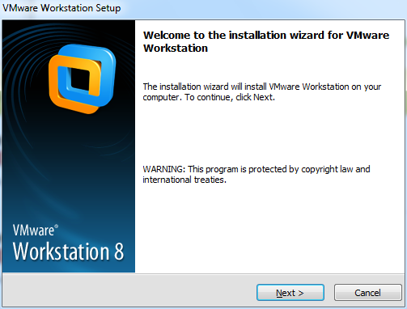

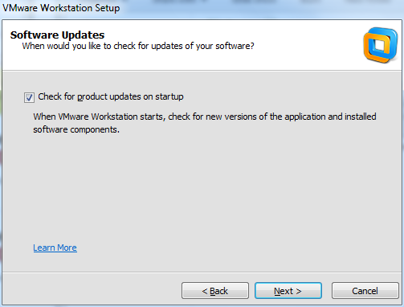

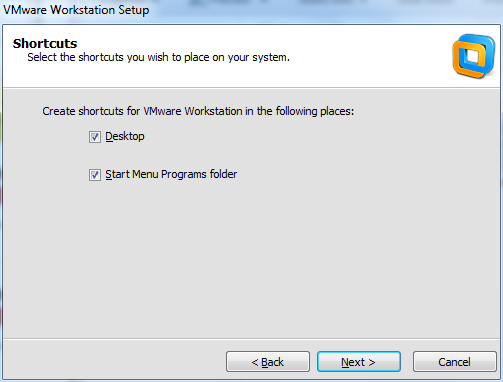
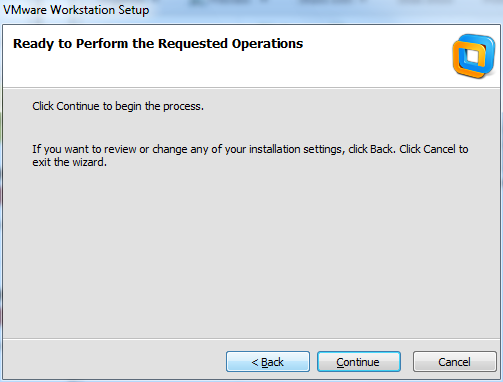
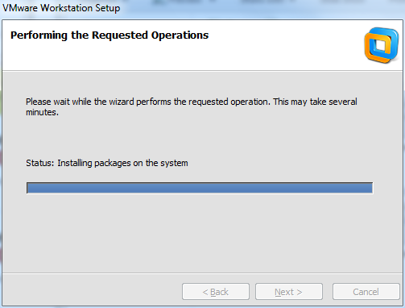
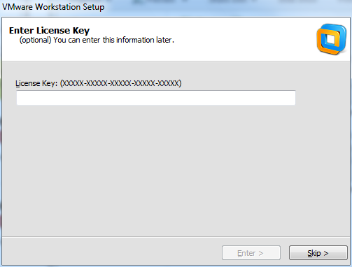

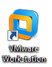
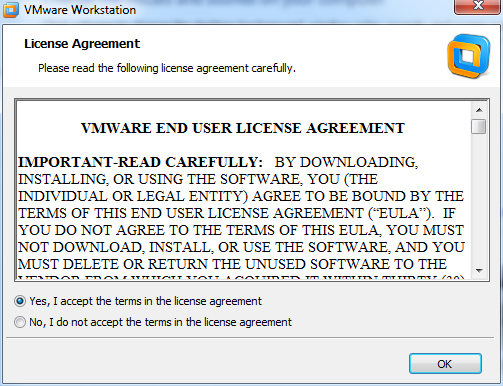

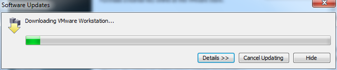
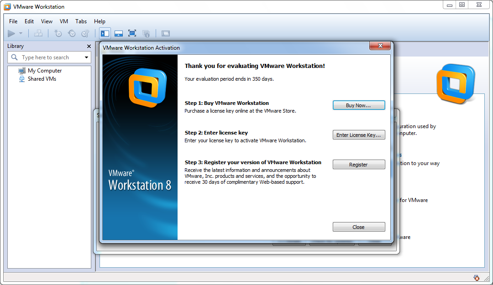
Download Ubuntu. Go to http://www.ubuntu.com/desktop/get-ubuntu/download and choose the latest 64-bit version. Save the downloaded Ubuntu file at some place you can recognize later.
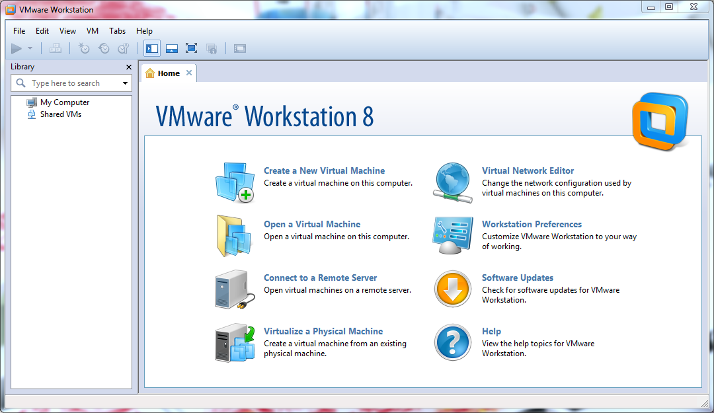

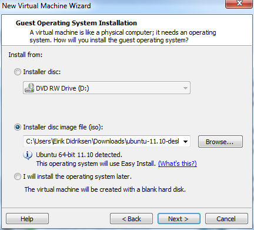
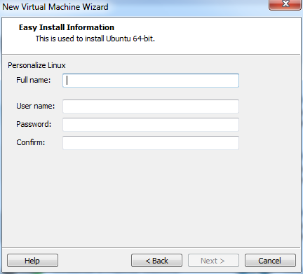
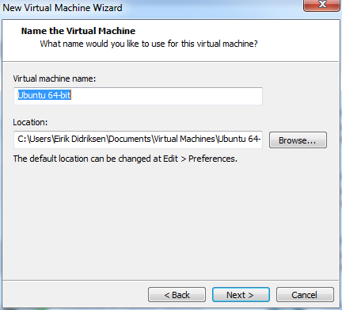
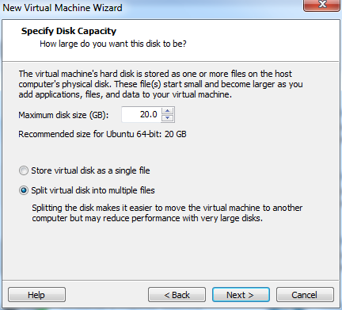

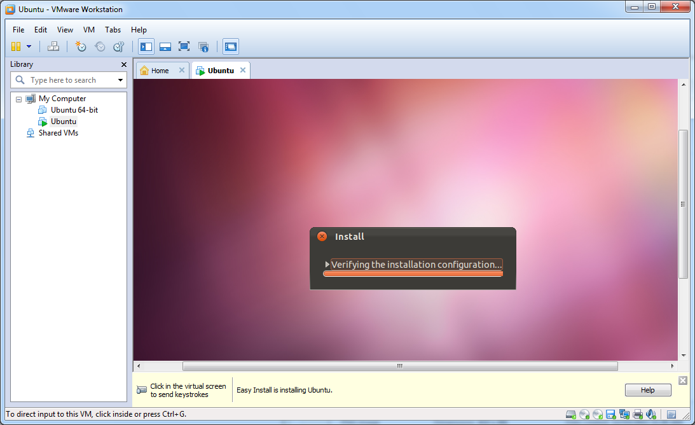
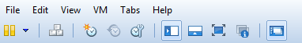
Recall to run Update Manager in Ubuntu to update the operating system. You find the Update Manager under the menu System - Administration - Update Manager.
Multi-processor computers will normally let Ubuntu run on just one processor. The memory accessible from Ubuntu may also be (much) smaller than what the computer actually has available. At this time of writing it is unclear if a dual boot solution will give significantly more power to Ubuntu. The downside with a dual boot solution, compared to VMWare Fusion, is that the Ubuntu drivers might not be able to integrate all features of the track pad properly.
To modify the settings for processors and memory on the Ubuntu side, shut down the virtual machine by going to the VMWare Fusion menu panel og choosing Virtual Machine - Shut down. Then, in the same pull down menu, choose Settings and click on the menu item with Processors and Memory. Now the processors and memory can be adjusted to your needs for high-performance computing with Ubuntu.
Choosing too small memory (less than 1Gb) can make Ubuntu run slowly when you have a web browser with many windows for instance.
Keyboard. If your keyboard is Norwegian, you probably want to change from the default English/US keyboard in Ubuntu to Norwegian: System - Preferences - Keyboard - Layouts - Add ... - Norway. However, many prefer to do programming with an English/US keyboard and switch between this keyboard and the native language. Click on Options ... in the Layout window, choose Keys to switch keyboard layout by pressing a certain key combination, e.g., Ctrl-L + Shift-R toggles between English/US and Norwegian keyboards (very handy!).
[Eirik, hva er dette? IF YOU PRESS THE x on the tab of your computer. you will have to select "open a virtual machine" on the home tab and navigate to the fielder you saved your vm. default is under your documents/virual machines/machinenme]
Turn on File Sharing. Make sure the virtual machine is shut dowm. Before you turn on the vitual machine, select Edit virtual machine settings, select Options - Filesharing - Always Enabled and add the directories you want to share with your virtual machine. Choose read-only if you want your virtual machine to only have read access to this directory next time you start your machine. Your files are located under /mnt/hgfs on Ubuntu. Usually, you want to make a link with a more memorable name, e.g.,
Linux> ln -s /mnt/hgfs $HOME/Mac-files # or Win-files
If you like to use the Places dropdown menu in Ubuntu for finding files, you can choose Computer, then File System, click mnt, and finally drag hgfs to the list of places in the left part of the window. Then you have easy access to your Mac files from the Places menu.
Updating Ubuntu. See http://www.ivankristianto.com/os/ubuntu/things-you-want-to-do-after-install-ubuntu-10-04-desktop-part-2/1237/
Internet Does not Work in Ubuntu. To be tested and written...